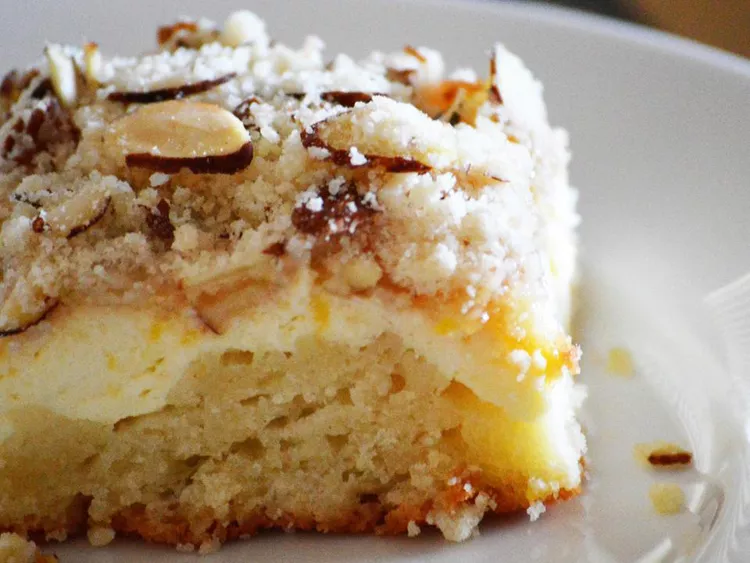

Raspberry Cream Cheese Cake
Home

Description
This raspberry cream cheese cake is a wonderful alternative to those standard cinnamon and walnut streusel coffee cake recipes. It's perfect for a brunch or special family gathering. Prepping the batter in a food processor makes it quick and easy to assemble.
Ingredients
Cake:
- 2 ¼ cups all-purpose flour
- ¾ cup white sugar
- ¾ cup unsalted butter, cut into 1-inch pieces
- ¾ cup sour cream
- 1 large egg
- 1 teaspoon almond extract
- ½ teaspoon baking soda
- ½ teaspoon baking powder
- ¼ teaspoon salt
Topping:
- ½ cup sliced almonds
Steps
- Preheat the oven to 350 degrees F (175 degrees C). Grease and flour a 9-inch springform pan.
- Make the cake: Combine flour, sugar, and butter in a food processor; pulse until mixture resembles coarse crumbs. Remove 1 cup of mixture and set aside for topping.
- Add sour cream, egg, almond extract, baking soda, baking powder, and salt to the food processor. Process until batter is combined and smooth, then pour into the prepared pan. Spread over the bottom and 2 inches up the sides.
- Make the cream cheese layer: Beat cream cheese, sugar, and egg in a bowl with an electric mixer until smooth. Pour over batter in the pan and spread evenly. Carefully spread preserves over top.
- Make the topping: Stir 1 cup reserved crumb mixture and almonds together in a small bowl. Sprinkle over preserves.
- Bake in the preheated oven until filling is set and topping is golden brown, 45 to 55 minutes.
- Remove from the oven and cool in the pan for 15 minutes. Carefully remove the sides of the pan. Chill completely before serving, about 1 hour.